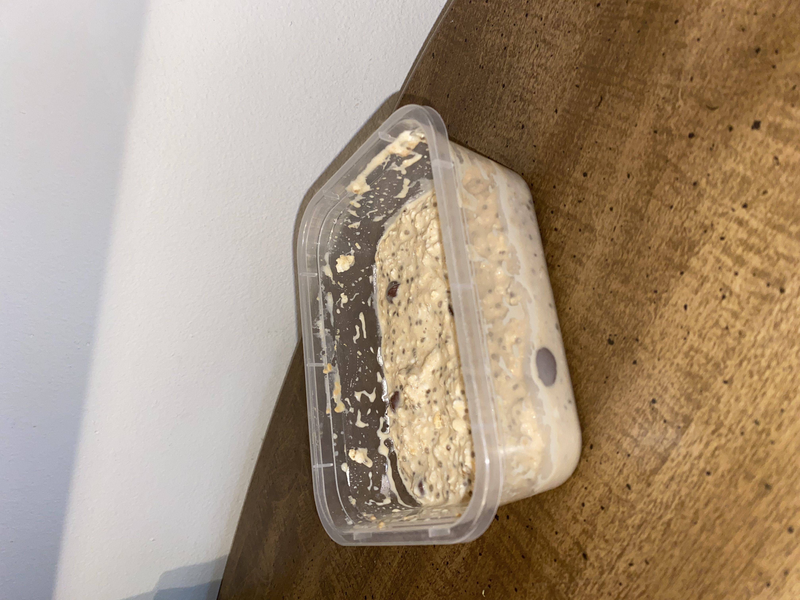

Peanut Butter Overnight Oats
Ingredients:
- Plain Oats
- Milk of Choice
- Chia Seeds
- Powdered Peanut Butter
- Any other ingredients can be
added to this recipe, but the
measurements, espcially the milk, may
need be be adjusted
Cooking Tools Needed:
- Mason Jar / Container
- Spoon
- Measuring Utensils
Recipe:
- 1. Pour 1/2 C of oats in mason jar
- 2. Add 1 C of milk
- 3. Add 2 TBSP powdered peanut butter
- 4. Add 1 TBSP chia seeds
- 5. Mix all of the ingredients
together in the mason jar or container
- 6. Refrigerate overnight and enjoy
in the morning!
